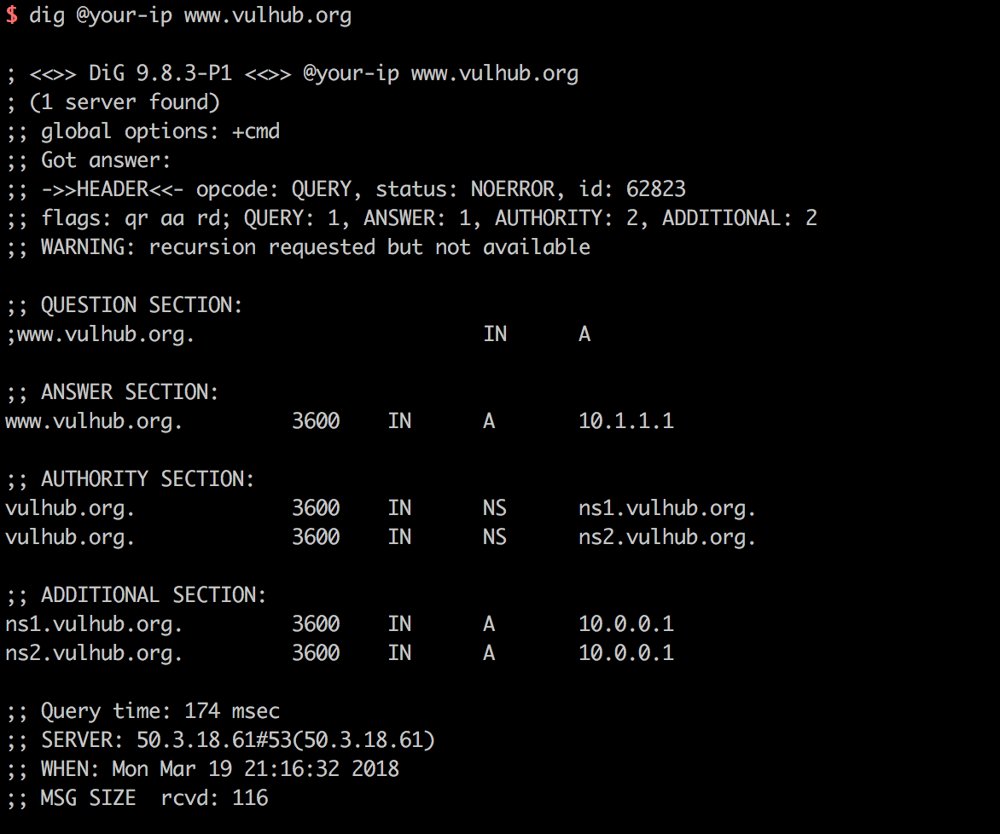

DNS域传送漏洞¶
DNS协议支持使用axfr类型的记录进行区域传送，用来解决主从同步的问题。如果管理员在配置DNS服务器的时候没有限制允许获取记录的来源，将会导致DNS域传送漏洞。
参考链接：
- https://www.acunetix.com/blog/articles/dns-zone-transfers-axfr/
- https://nmap.org/nsedoc/scripts/dns-zone-transfer.html
环境搭建¶
Vulhub使用Bind9来搭建dns服务器，但不代表只有Bind9支持AXFR记录。运行DNS服务器：
docker compose up -d
环境运行后，将会监听TCP和UDP的53端口，DNS协议同时支持从这两个端口进行数据传输。
漏洞复现¶
在Linux下，我们可以使用dig命令来发送dns请求。比如，我们可以用dig @your-ip www.vulhub.org获取域名www.vulhub.org在目标dns服务器上的A记录：

发送axfr类型的dns请求：dig @your-ip -t axfr vulhub.org

可见，我获取到了vulhub.org的所有子域名记录，这里存在DNS域传送漏洞。
我们也可以用nmap script来扫描该漏洞：nmap --script dns-zone-transfer.nse --script-args "dns-zone-transfer.domain=vulhub.org" -Pn -p 53 your-ip